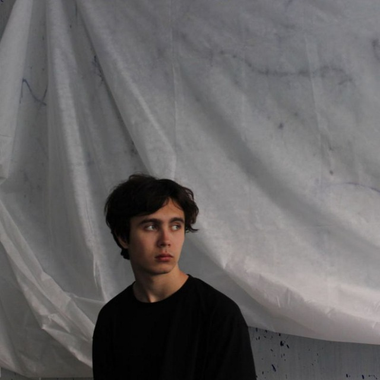

About
Я математик, специализирующийся в области алгебраической топологии, K-теории и гомологической алгебры. В настоящее время я получаю степень бакалавра математики и компьютерных наук в Санкт-Петербургском государственном университете (входит в топ-100 рейтинга QS по математике).
Мои исследовательские интересы включают гомологию групп, K-теорию, гомологическую алгебру, алгебраическую топологию и алгебраическую теорию чисел. Я активно участвую в исследовательских проектах и научных семинарах.
Помимо исследований, я увлечен преподаванием математики и организацией образовательных мероприятий. Я считаю, что математика должна быть доступной и интересной для всех.
ivan.vasilev@example.com
Санкт-Петербургский государственный университет
Bachelor of Math and Computer Science (GPA: 4.75/5)
IELTS: 7.5 (2024)